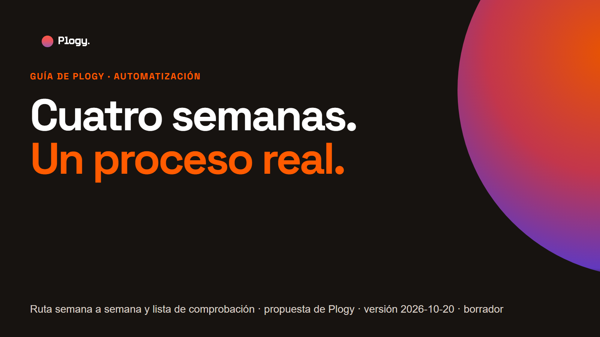
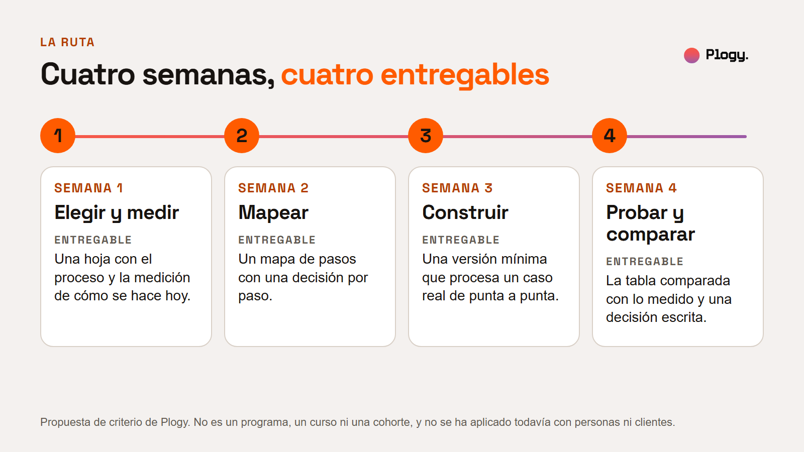
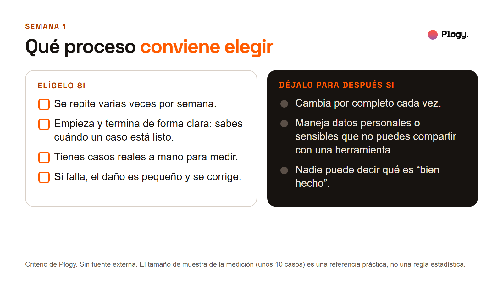
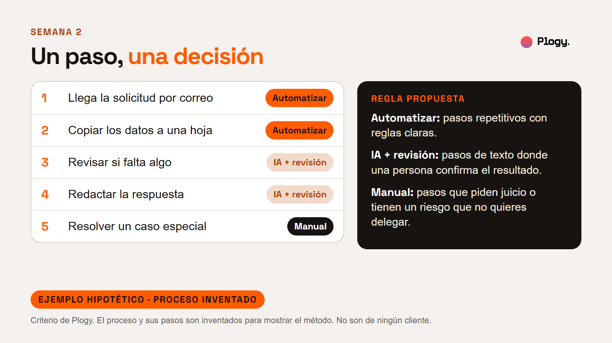
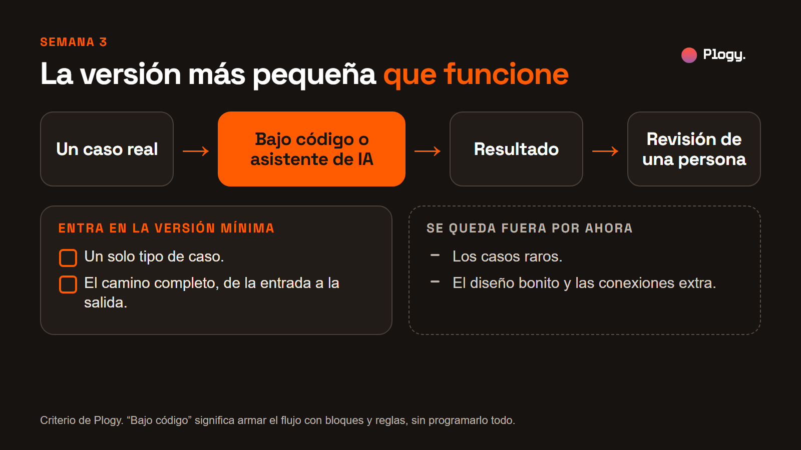
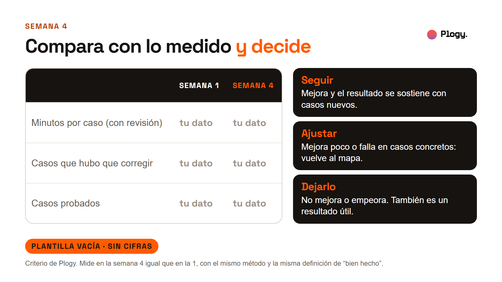
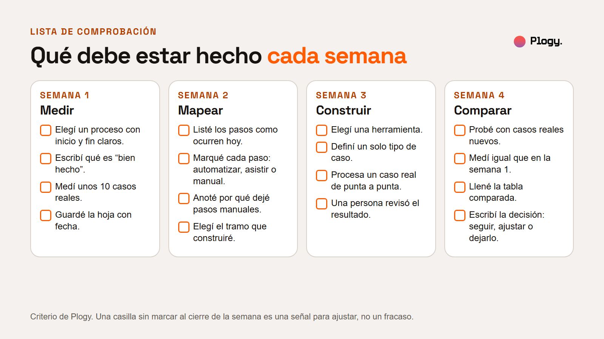

Cuatro semanas, un proceso real: ruta para aprender a automatizar

Guía de Plogy · Pieza 012 · Palabra clave del carrusel: RUTA
- Estado: BORRADOR para revisión humana. No publicado.
- URL prevista:
/guias/ruta-de-cuatro-semanas(por confirmar cuando se configure la web) - Fecha de la versión: 2026-10-20
- Última actualización: 2026-10-20 (versión inicial)
- Pilar: Conocimiento (secundario: Filosofía) · Audiencia: Ploggers · Vertical: IA y automatizaciones
- Tipo: guía educativa. No parte de una noticia.
- Autor y revisor: pendiente de asignar
Resumen
- Se aprende a automatizar haciéndolo con un proceso real, no viendo herramientas sueltas. Esta guía propone una ruta de cuatro semanas.
- Cada semana tiene una tarea y un entregable: una hoja con la medición de hoy, un mapa de pasos con una decisión por paso, una versión mínima que funciona y una tabla comparada con una decisión.
- Lo que mides en la semana 1 es lo que te permite juzgar el resultado en la semana 4.
- Al final hay una lista de comprobación para cerrar cada semana.
Qué es y qué no es. Es una propuesta de criterio de Plogy. No es un programa, un curso ni una cohorte, y todavía no se ha aplicado con personas ni con clientes. Puedes adaptarla a tu ritmo: la ruta fija entregables, no horas.
1. La idea
Un tutorial enseña una herramienta con un ejemplo limpio: sin casos raros, sin personas que lo usen, sin nadie que espere el resultado. Un proceso real obliga a decidir: qué se automatiza, qué no, cómo sabes que funcionó. Por eso la ruta parte de un proceso real y se organiza alrededor de lo que entregas cada semana.

| Semana | Tarea | Entregable |
|---|---|---|
| 1 | Elegir un proceso y medir cómo se hace hoy | Una hoja con el proceso, qué es "bien hecho" y la medición de unos 10 casos reales |
| 2 | Mapear los pasos y decidir cuáles automatizar | Un mapa de pasos con cada paso marcado: automatizar, asistir con IA o manual |
| 3 | Construir una versión mínima | Una versión que procesa un caso real de punta a punta |
| 4 | Probar con casos reales y comparar | Una tabla comparada con lo medido y una decisión escrita |
2. Semana 1: elegir y medir
Tarea. Elige un proceso, define cuándo un caso está bien hecho y mide cómo se hace hoy.

- Elige un proceso. Conviene que se repita varias veces por semana, que empiece y termine de forma clara, que tengas casos reales a mano y que, si falla, el daño sea pequeño y se pueda corregir.
- Déjalo para después si cambia por completo cada vez, si maneja datos personales o sensibles que no puedes compartir con una herramienta, o si nadie puede decir qué es "bien hecho".
- Define "bien hecho". Escribe en una o dos frases cuándo un caso está listo. Sin esa definición no se puede contar lo que hubo que corregir.
- Mide unos 10 casos reales. Por cada caso anota quién lo hizo, cuántos minutos tardó, si hubo que corregirlo y cuántos minutos costó la corrección. La cifra de 10 es una referencia práctica, no una regla estadística.
- Guarda la hoja con fecha y anota cómo mediste, para repetir el método en la semana 4.
Entregable. Una hoja con el proceso, la definición de "bien hecho" y la medición de unos 10 casos reales.
Cómo sabes que terminaste. Puedes decir, con datos tuyos, cuántos minutos tarda hoy un caso y cuántos casos hubo que corregir.
3. Semana 2: mapear y decidir
Tarea. Escribe los pasos tal como ocurren hoy, no como deberían ocurrir, y decide qué hacer con cada uno.

- Lista los pasos en orden, con el nombre que les da quien hace el trabajo.
- Pregúntale a cada paso si es repetitivo, si tiene reglas claras y qué pasa si sale mal.
- Marca una decisión por paso. Regla propuesta: automatizar los pasos repetitivos con reglas claras; IA con revisión en los pasos de texto donde una persona confirma el resultado; manual en los que piden juicio o tienen un riesgo que no quieres delegar.
- Anota por qué dejaste cada paso manual. Es información útil, no un fracaso.
- Elige el tramo que vas a construir: el más corto de pasos seguidos que quite trabajo.
Ejemplo hipotético. Un proceso inventado de responder solicitudes de información: llegar por correo (automatizar), copiar los datos a una hoja (automatizar), revisar si falta algo (IA con revisión), redactar la respuesta (IA con revisión) y resolver un caso especial (manual). No es de ningún cliente.
Entregable. Un mapa de pasos con cada paso marcado: automatizar, asistir con IA o manual.
4. Semana 3: construir la versión mínima
Tarea. Construye la versión más pequeña que funcione, de la entrada a la salida, con una herramienta de bajo código o un asistente de IA.

- Bajo código significa armar el flujo con bloques y reglas, sin programarlo todo. Asistente de IA significa darle instrucciones y ejemplos y revisar lo que devuelve. Esta guía no recomienda una marca: usa la que ya puedas manejar con tus datos y tus permisos.
- Un solo tipo de caso. Los casos raros se quedan fuera por ahora.
- De punta a punta, aunque sea feo. Una versión fea que funciona completa enseña más que una versión pulida a medias.
- Una persona revisa cada resultado. Si pruebas con datos de otras personas o de un negocio, comprueba antes que puedes usarlos con esa herramienta.
- Guarda las instrucciones o la configuración que usaste, para poder repetirlo.
Entregable. Una versión mínima que procesa un caso real de punta a punta.
Si no funciona con el primer caso, simplifica: menos pasos, un caso más sencillo, instrucciones más claras.
5. Semana 4: probar y comparar
Tarea. Prueba con casos reales nuevos y compara con lo que mediste en la semana 1.

- Usa casos reales distintos de los que usaste para construir.
- Mide igual que en la semana 1: los mismos números, la misma definición de "bien hecho". Suma el tiempo de revisar el resultado.
- Llena la tabla comparada (abajo).
- Decide por escrito: seguir si mejora y se sostiene con casos nuevos; ajustar si mejora poco o falla en casos concretos (vuelve al mapa); dejarlo si no mejora o empeora. Dejarlo también es un resultado útil.
- Anota aparte cuánto tiempo te costó construirlo. No está en la tabla y también cuenta al decidir.
Tabla comparada, para copiar a una hoja de cálculo:
| Semana 1 | Semana 4 | |
|---|---|---|
| Minutos por caso (con revisión) | ||
| Casos que hubo que corregir | ||
| Casos probados |
Entregable. La tabla comparada y una decisión escrita.
6. Qué haría Plogy primero
Es criterio de Plogy, no un hecho de fuentes externas. Antes de tocar una herramienta mediría un solo proceso y dejaría la medición escrita. Después mapearía, construiría lo mínimo y volvería a medir igual. Esta ruta todavía no se ha aplicado con personas ni con clientes de Plogy.

7. Lista de comprobación semanal

Al cerrar la semana 1:
- Elegí un proceso con inicio y fin claros.
- Escribí qué es "bien hecho".
- Medí unos 10 casos reales.
- Guardé la hoja con fecha.
Al cerrar la semana 2:
- Listé los pasos como ocurren hoy.
- Marqué cada paso: automatizar, asistir con IA o manual.
- Anoté por qué dejé pasos manuales.
- Elegí el tramo que construiré.
Al cerrar la semana 3:
- Elegí una herramienta.
- Definí un solo tipo de caso.
- La versión procesa un caso real de punta a punta.
- Una persona revisó el resultado.
Al cerrar la semana 4:
- Probé con casos reales nuevos.
- Medí igual que en la semana 1.
- Llené la tabla comparada.
- Escribí la decisión: seguir, ajustar o dejarlo.
Una casilla sin marcar al cierre de la semana es una señal para ajustar, no un fracaso.
8. Lo que esta guía no cubre
- Cuánto tiempo dedicar por semana. Depende de cada persona y de su proceso. La ruta fija entregables, no horas.
- Qué herramienta elegir. No compara ni recomienda marcas.
- Protección de datos en detalle. Solo avisa de revisar qué datos puedes usar con una herramienta.
- Qué pasa después de la semana 4: mantenimiento, costo de operar y escalar la versión mínima.
- El tamaño de muestra estadístico. Los 10 casos son una referencia práctica.
- Resultados. Ninguna cifra de esta guía es de una persona, un cliente ni una fuente: el ejemplo del mapa es inventado y la tabla de comparación está vacía. No se garantiza ningún resultado.
9. Fuentes
No hay fuentes externas. El contenido es criterio de Plogy. Una revisión humana puede añadir referencias de mejora de procesos o de aprendizaje basado en proyectos si lo considera útil. Pendiente.
10. Siguiente paso
Sigue a Plogy para ver cómo se implementa la IA en negocios y cómo se aprende a construirla.
Historial de cambios
- 2026-10-20: versión inicial en borrador, con portada, seis figuras, una foto de la biblioteca y la lista de comprobación. Las figuras se generan desde
reporte-figuras.html.